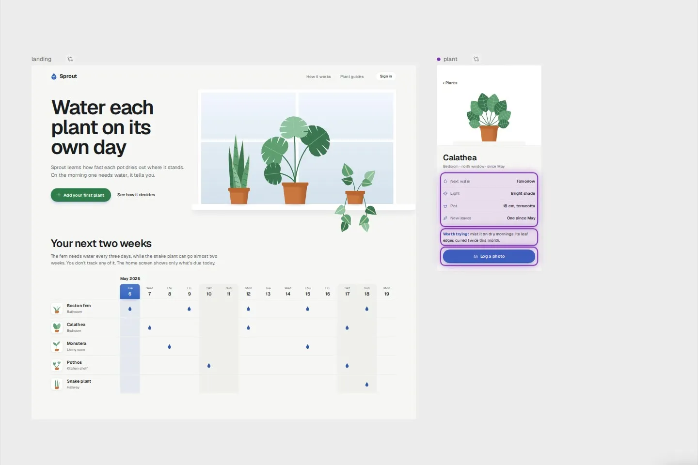
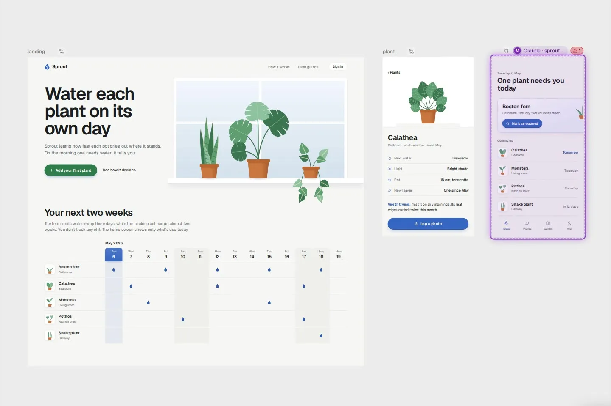
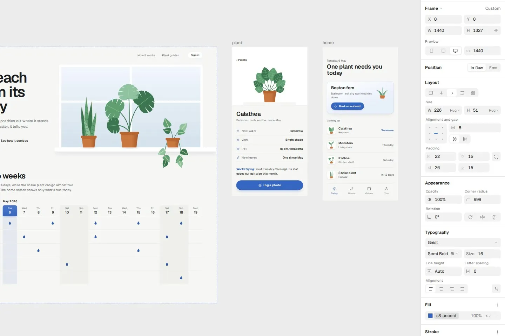
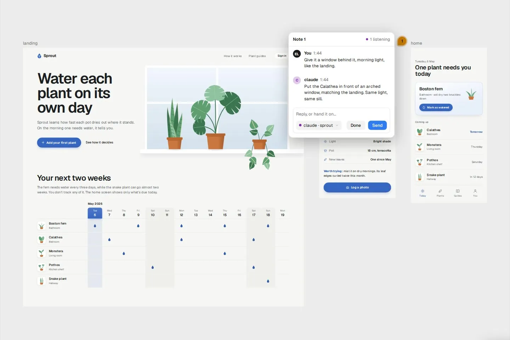
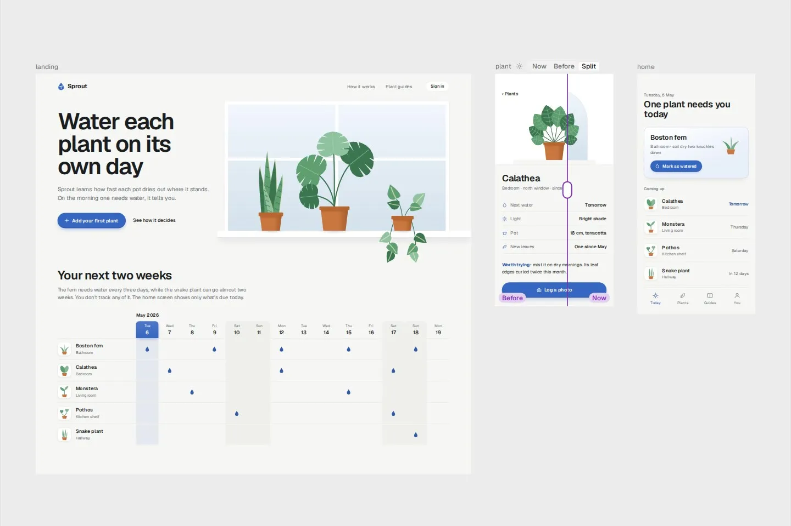
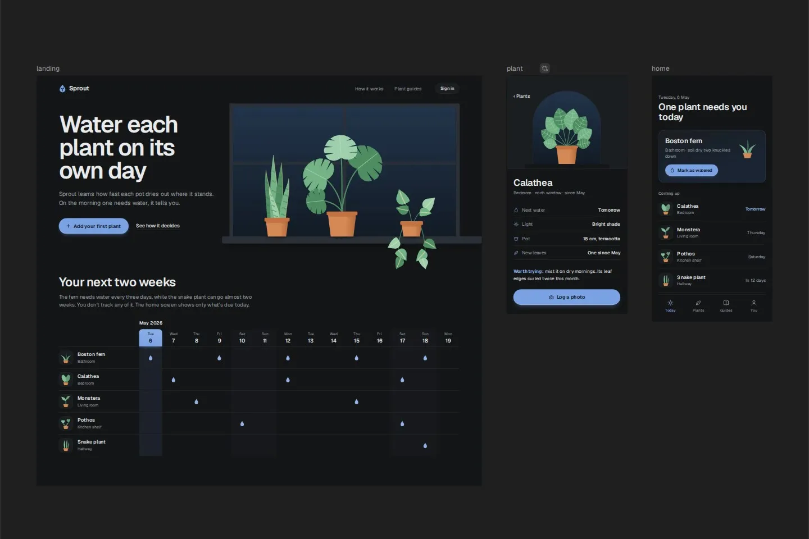

From a file to a screen you signed off
-
The moment your agent writes one, it is on the board, so it draws with the tools it already has.
-
Clipped text, a missing font, or a color set for one theme only is flagged on the frame and reported to the agent that wrote it.
-
Change text, color, and type by hand, picking colors from your own tokens. Only what you touch changes.
-
Pin a note on a frame or an element, and it reaches your agent straight away. Its reply lands in the thread.
-
Compare a frame with the version before the agent touched it.
-
Flip one frame or the whole board, and capture either theme as a PNG.





